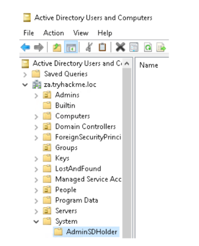
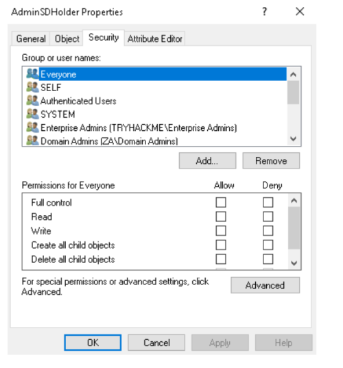
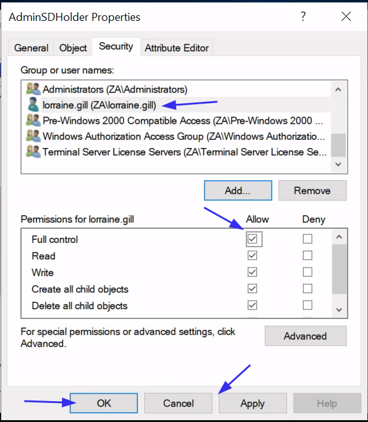
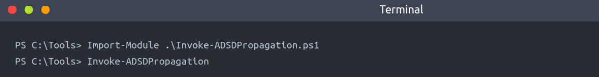
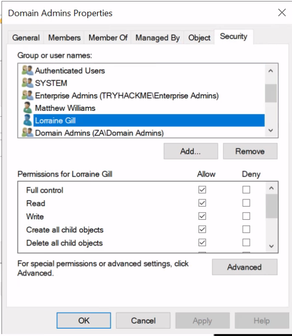
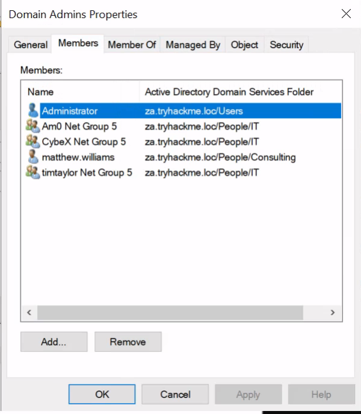
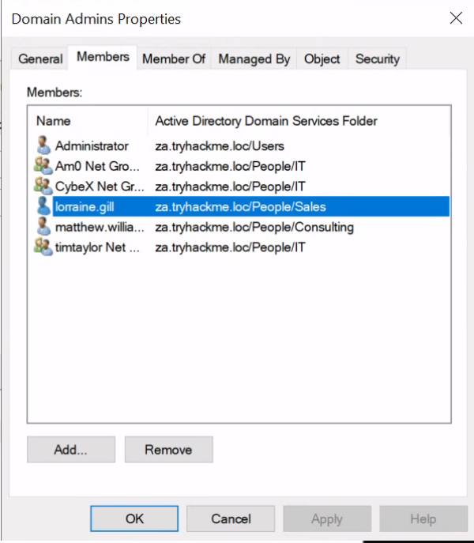

Persistence Through ACLs
Sometimes, we need more than just persisting to normal AD groups. What if we want to persist to all protected groups simultaneously?
Persisting through AD Group Templates
While we can just add an account we control to every single privileged group we can find, the blue team would still be able to perform cleanup and remove our membership. In order to ensure a bit better persistence and make the blue team scratch their heads, we should rather inject into the templates that generate the default groups. By injecting into these templates, even if they remove our membership, we just need to wait until the template refreshes, and we will once again be granted membership.
One such template is the AdminSDHolder container. This container exists in every AD domain, and its Access Control List (ACL) is used as a template to copy permissions to all protected groups. Protected groups include privileged groups such as Domain Admins, Administrators, Enterprise Admins, and Schema Admins.
A process called SDProp takes the ACL of the AdminSDHolder container and applies it to all protected groups every 60 minutes. We can thus write an ACE(Access Control Entry) that will grant us full permissions on all protected groups. If the blue team is not aware that this type of persistence is being used, it will be quite frustrating. Every time they remove the inappropriate permission on the protected object or group, it reappears within the hour. Since this reconstruction occurs through normal AD processes, it would also not show any alert to the blue team, making it harder to pinpoint the source of the persistence.
Persisting with AdminSDHolder
In order to deploy our persistence to the AdminSDHolder, we will use Microsoft Management Console (MMC). To avoid kicking users out of their RDP sessions, it will be best to RDP into THMWRK1 using your low privileged credentials, use the runas command to inject the Administrator credentials, and then execute MMC from this new terminal:
runas /netonly /user:Administrator cmd.exe
Once you have an MMC window, add the Users and Groups Snap-in (File->Add Snap-In->Active Directory Users and Groups). Make sure to enable Advanced Features (View->Advanced Features). We can find the AdminSDHolder group under Domain->System:

Navigate to the Security of the group (Right-click->Properties->Security):

Let's add our low-privileged user and grant Full Control:
1. Click Add.
2. Search for your low-privileged username and click Check Names.
3. Click OK.
4. Click Allow on Full Control.
5. Click Apply.
6. Click OK.
It should look something like this:

SDProp
Now we just need to wait 60 minutes, and our user will have full control over all Protected Groups. This is because the Security Descriptor Propagator (SDProp) service executes automatically every 60 minutes and will propagate this change to all Protected Groups. However, since we do not like to wait, let's kick off the process manually using Powershell. In the C:\Tools\ directory, a script Invoke-ADSDPropagation is provided::
Note: The CMDLET has to be run from the DC Machine as a Domain Admin user.

Once done, give it a minute and then review the security permissions of a Protected Group such as the Domain Admins group (you can use the search command to find this group):

As can be seen, our low privilege user has full control over the group. You can verify that this will continue to propagate by removing your user from the security permissions and rerunning the PowerShell script. Your user will be added again.
Important Note:
Interestingly, although we have permissions to modify the group, it does not automatically add us to the group:
We have to manually add our user to this group for Administrative Access.

However, using our new permissions, we can add ourselves to this group:

Now, our user has administrator access.
It Is Going Downhill For The Blue Team
Imagine combining this with the nesting groups of the previous task. Just as the blue team finished revoking your access through numerous group changes, 60 minutes later, you can just do it all again. Unless the blue team understands that the permissions are being altered through the AdminSDHolder group, they would be scratching their heads every 60 minutes. Since the persistence propagates through a legitimate AD service, they would most likely be none the wiser every time it happens. If you really want to persist, you can grant full control to the Domain Users group in the AdminSDHolder group, which means any low-privileged user would be granted full control over all Protected Groups. Combining this with a full DC Sync means the blue team will have to reset every single credential in the domain to flush us out completely.